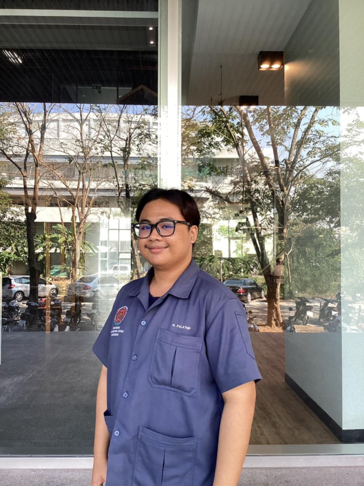

Home

สวัสดีครับ ผม นายพลาธิป มีบุบผา
นักศึกษาชั้นปีที่ 4 คณะวิศวกรรมศาสตร์และเทคโนโลยีอุตสาหกรรม สาขาวิศวกรรมอิเล็กทรอนิกส์และระบบคอมพิวเตอร์
มหาวิทยาลัยศิลปากร วิทยาเขตสนามจันทร์ ตัวผมอยากได้ประสบการณ์การทำงานจริงเพื่อจะได้พัฒนาตัวเอง
สามารถทำงานร่วมกับผู้อื่นและปรับตัวเข้ากับงานได้ครับ
ข้อดี : มีความรับผิดชอบ , ส่งงานตามกำหนดการ , ทำงานเป็นทีม , ใส่ใจความรู้สึก , ศึกษาหาข้อมูลที่สนใจ
ข้อเสีย : อ่อนไหวง่าย , อ่อนประสบการณ์ , คิดมากเกินไป
SOFT SKILL :
-Teamwork and Collaboration
-Motivation and work ethic
-Embracing and Celebrating Change
-Curiosity and Continuous Learning
-Positive Attitude
PROGRAM :
-Microsoft office 365
-ISIS Professionnal(Proteus)
-ARES 7 Professionnal
-Arduino IDEEclipse IDE for Java
-R programming and RStudio
-MATLAB
-MPLAB
-LabVIEW
-Adobe Phot
-Adobe Premiere Pro
-OBS Studio